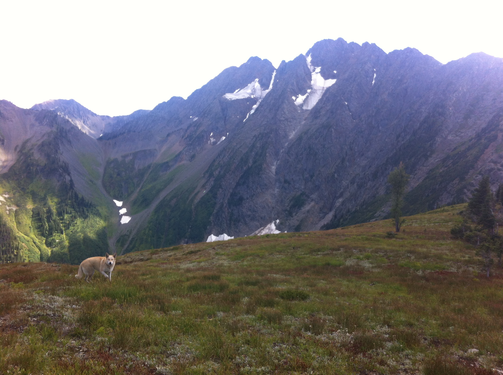

Sinixt Peoples’ tmxʷulaʔxʷ encompasses the 500 square kilometres of Piq kiʔláwnaʔ, an important wildlife corridor, which sits in the heart of the globally unique Inland Temperate Rainforest bioregion. Valley-bottom areas around the old Retallack townsite fall within the Slocan Moist Warm Interior Cedar – Hemlock (ICHmw2) biogeoclimatic subzone. Culturally important, this area is also the home of the White Grizzly (Piq kiʔláwnaʔ), held sacred by the Sinixt. Although the Piq kiʔláwnaʔ area benefits from the Goat Range and Kokanee Parks to the north and south, this ecosystem is fragmented by Highway 31A. In order to be an essential connective corridor between these parks, the area is also over-tenured by industry and recreation. The Rewilding campaign strives to: reduce the impacts of commercial and recreational tenures: reduce highway impacts on wildlife including roadkill and habitat fragmentation, stop low elevation air traffic above Piq kiʔláwnaʔ; and re-establish the ecological integrity of the area via restoration projects.
Sinixt tmxʷulaʔxʷ (homeland) stretches from the Grand Bend on the Columbia River, south to Kettle Falls, from the height of the Monashee Range in the west to the height of the Purcell Range in the east. Sinixt tmxʷulaʔxʷ was divided by the Canada-US border with 80% of Sinixt territory in what is now known as South-eastern BC. In Canada, the Arrow Lakes Band of Sinixt were deemed “extinct for purposes of the Indian Act” in 1956, and thus are not a government-recognized First Nation in Canada. However, Sinixt continue to uphold their responsibilities to the land and their ancestors through cultural, archaeological and ecological projects. See sinixt.org for more info
North Valley Huts gratefully acknowledges that we live and work on the traditional, ancestral and unceded territory of Sinixt Peoples. I make this acknowledgement to show my respect for the tmxʷulaʔxʷ, and Sinixt Nation. I feel privileged and grateful to be here, and I invite those reading this to explore their own relationship to place.
.jpg)